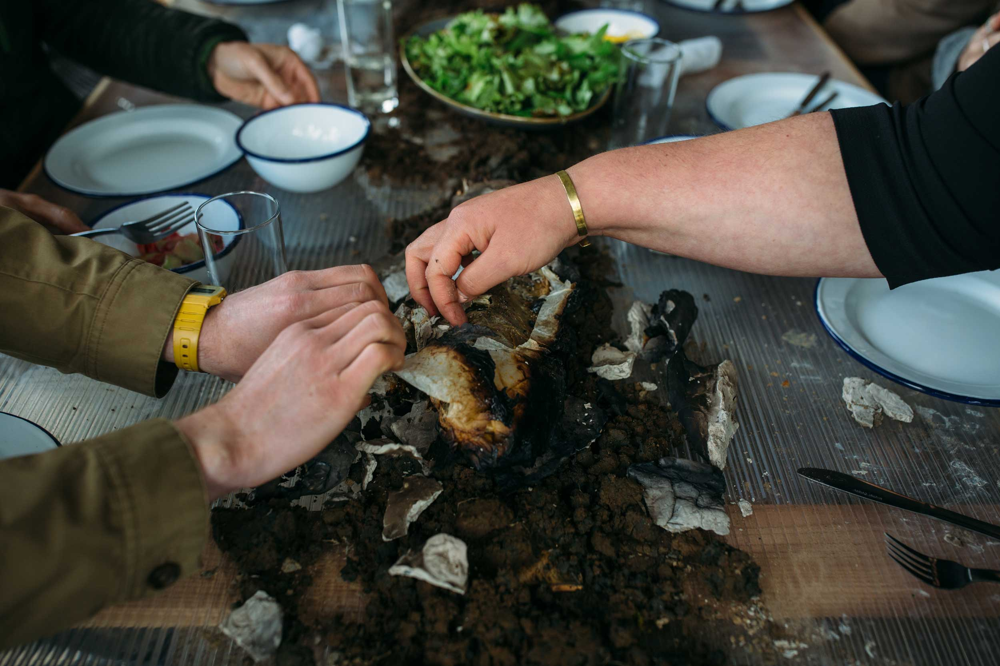
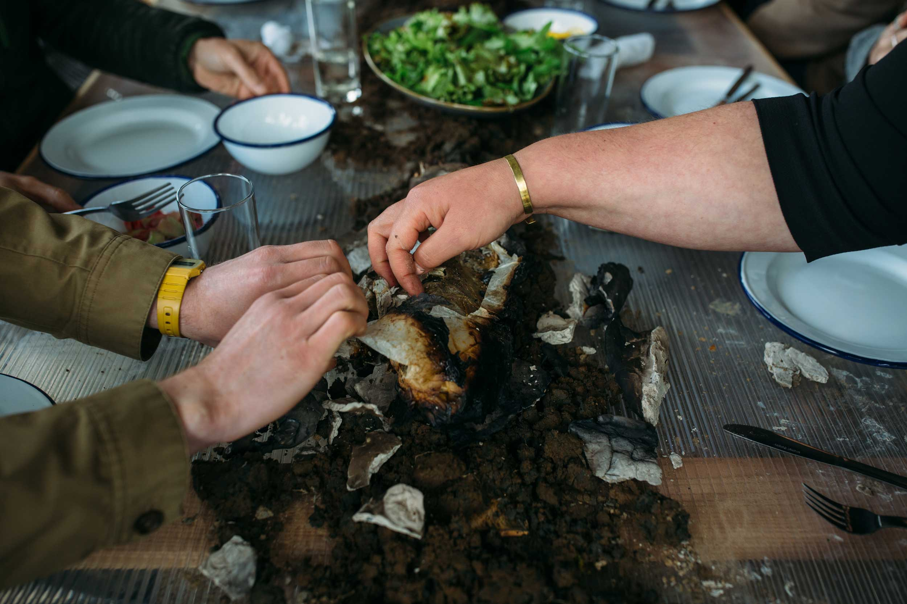

2nd July 2023, Greenmyers Eco Bothy, Huntly
This event with Deveron Projects drew together cheese, yogurt, koji and sourdough cultures in a celebratory earth oven* feast. Incorporating wild clay gathered from Sandend and the river Bogie into her stoneware, artist Fionn Duffy had created a collection of vessels for the final meal to be offered into the fire and earth. Cooking the meal directly on glowing hot bisque fired vessels and burning embers, Kawther Luay drew to a close the cultures that had given rise to relationships, dishes and stories drawn out over her 3 month residency.
With the focus on wild clay, ceramic vessels were fired alongside food prepared by Kawther, unearthed in time to share a meal altogether. In this event, the fire pit, built for this meal and inspired by earth oven cooking*, allowed us to visualise the relationship between craft and food. Participants were invited to shape clay foraged in the nearby River Bogie, working with Fionn to make clay fire offerings, before being placed on the oven.
Reflecting on all of the related events, the artists, with guests, explored the project's questions around gathering wild materials in contemporary society, the relationship to Huntly and our histories, and the politics of food and coming together around a dinner table. Ultimately, Fionn and Kawther were asking when this meal begun: was it when the food went into the fire? When the fire pit was built? When we collected the clay from the riverbed? When the riverbed formed? And, in the same light, when does the meal end, if we are all to take away knowledge, or even objects, from the event?
* For this meal, Kawther will be taking inspiration and learning from the Indigenous and ancestral technique of earth oven cooking. This method has been invented and used world over in many different forms by Indigenous peoples - we're grateful to the gardeners of the Yucatán based hacienda in Mexico who shared and taught this practice of cooking with the earth to Kawther.
photographs by Jassy Earl
 

FIONN GOES TO TOP OF TABLE:
There’s a fish in a stone in Rhynie. The Craw Stane sits overlooking the A97 to one side and the Bogie waters on the other. The Picts are thought to have considered fish too precious to eat but we’re not Picts, so we decided to put fish into stone, cook it and feast together. Taking the time to honour the things that we’ve gathered and the places we’ve taken them from.
FIONN SETS OUT CLAY AT OVEN END
KAWTHER BRINGS FISH TO TOP OF TABLE:
Culinary knowledge is a social knowledge. Cooking is a thoughtful process. Gathering around a table and sharing company is how we practice being sociable humans, it provides a juncture for us to meet, get to know one another and be known in turn. Culinary knowledge is informed by taste and taste is something that can only be directly experienced on your own tongue. You can read about how things taste and you can know recipes in a technical sense, but a more sincere and embodied knowledge comes through intuition, cooking, tasting and sharing food with other people. Food can take on a completely different taste when it is shared.
KAWTHER EXPLAINS WHAT TO DO AS SHE MOVES DOWN THE TABLE WITH THE FISH
There’s a fish in a stone in Rhynie. The Craw Stane sits overlooking the A97 to one side and the Bogie waters on the other. The Picts are thought to have considered fish too precious to eat but we’re not Picts, so we decided to put fish into stone, cook it and feast together. Taking the time to honour the things that we’ve gathered and the places we’ve taken them from.
FIONN SETS OUT CLAY AT OVEN END
KAWTHER BRINGS FISH TO TOP OF TABLE:
Culinary knowledge is a social knowledge. Cooking is a thoughtful process. Gathering around a table and sharing company is how we practice being sociable humans, it provides a juncture for us to meet, get to know one another and be known in turn. Culinary knowledge is informed by taste and taste is something that can only be directly experienced on your own tongue. You can read about how things taste and you can know recipes in a technical sense, but a more sincere and embodied knowledge comes through intuition, cooking, tasting and sharing food with other people. Food can take on a completely different taste when it is shared.
KAWTHER EXPLAINS WHAT TO DO AS SHE MOVES DOWN THE TABLE WITH THE FISH